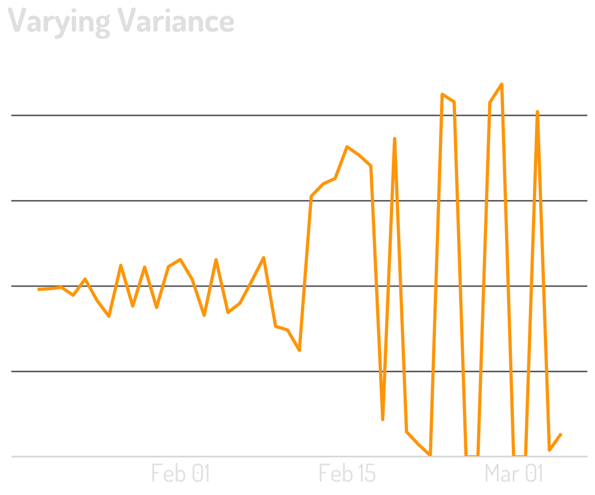
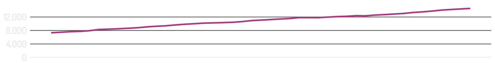

Time-Series Analysis
Important Concepts, Handy Techniques, and Some Cautionary Tales
Our data exists over time.

This is imperfect.

A stationary time series is one whose statistical properties do not depend on the time at which the series is observed. 1



From non-stationary to more stationary


Let’s shift gears

Decomposition can be amazing
A fairly “clean” series

It “decomposes” the data into three components

The Seasonal Component

The Trend Component
What’s Left!
“The Mean”
“The Variance”
Back to the overall series

The original mean + variance…embarrassing?

Let’s try again


This is powerful!
And now…to Bayesian things!

Specifically, Bayesian Structural Time-Series

Time-series decomposition turned up to 11

At its core: estimate the impact of an intervention

…and may have seasonality!

Plot the difference between the model & the actual

Their relationship to the metric of interest is stable
They are not themselves affected by the intervention

This is not a silver bullet!

What is “the population?”
Regardless…“the sample” is not ideal
Stationarity: constant mean, constant variance
First differences: don’t jump to correlations
Time-series decomposition
Bayesian structural time-series


Time…is hard.

Thank you!
Presentation: bit.ly/sw-time-series
Podcast: analyticshour.io
LinkedIn: